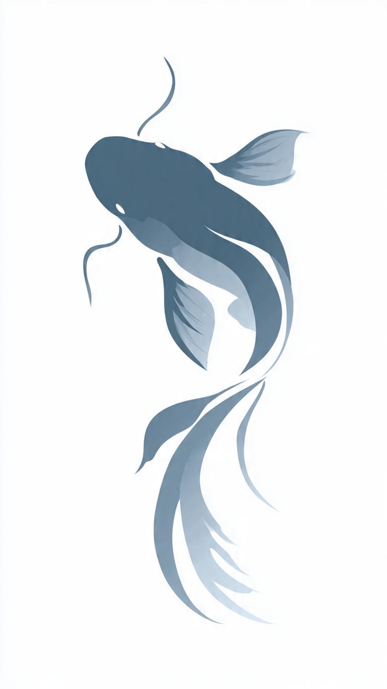
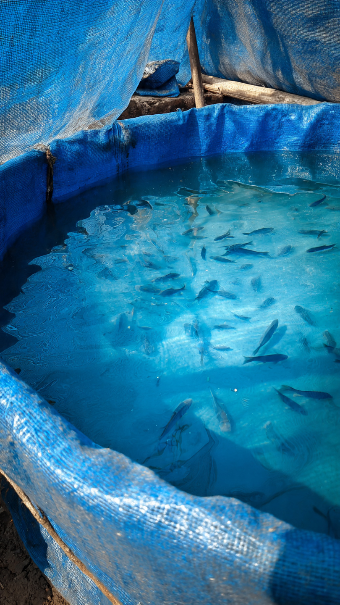

Economic Importance of Catfish Farming in Lagos, Nigeria
Why Catfish Farming Pays
Catfish farming is one of the most profitable agribusinesses in Nigeria due to high local demand and fast growth cycle. In Lagos markets, smoked and fresh catfish sell year-round with prices ranging from ₦1,200 to ₦2,500 per kg depending on size.


Key Economic Benefits
- Fast ROI: Catfish reach market size in 4-6 months
- High Demand: Lagos consumes over 3,000 metric tons monthly, with supply gap filled by imports
- Job Creation: Supports feed suppliers, processors, marketers, and transporters
- Small Start Capital: Can begin with backyard tanks or ponds for under ₦150,000
Revenue Estimate - Lagos Context
A small farm producing 1,000 catfish per cycle:
- Average weight at harvest: 1kg per fish
- Market price in Lagos: ₦1,500/kg
- Gross revenue per cycle: ₦1,500,000
- Typical cycles per year: 2
Note: Costs vary with feed prices and scale. Zalin Farms Consult provides full cost analysis for startups.
Get Started
Contact Zalin Farms Consult for site assessment, pond design, and profitability projections tailored to your Lagos location.
← Back to Home